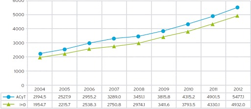

Marivel Solis Barrera
Diputada Federal
Iniciativas
Enseñanza de una segunda lengua en Educacion Media Superior y Superior.
Leer Mas

Incremento progresivo del Presupuesto destinado a Ciencia, Tecnología e Innovación.
Leer Mas
Garantizar el Derecho Humano a participar de los beneficios de la Ciencia.
Leer Mas
2020, Año de Leona Vicario, Benemérita Madre de la Patria.
Leer Mas
Constituir un Fondo para emprendimiento tecnológico
Leer Mas
Crear el Fondo de Aportaciones para el Fortalecimiento de la Ciencia, la Tecnología y la Innovación en las Entidades Federativas
Leer Mas
Incentivos para que micro, pequeñas y medianas empresas inviertan en innovación
Leer Mas